Multifamily Value-Add
The Hibiscus
Phoenix, Arizona | 37 Units
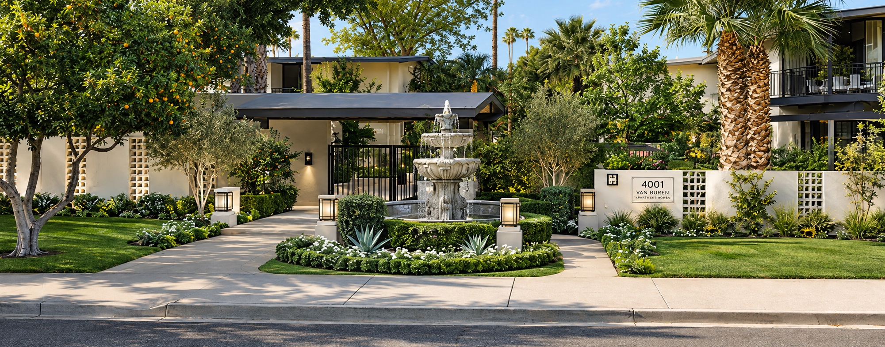
Project Overview
The Hibiscus is a 37-unit multifamily value-add underwriting case study in Phoenix, Arizona.
The analysis evaluates acquisition pricing, renovation costs, rent positioning, operating performance, debt structure, exit valuation and investment returns.
The underwriting incorporates comparable properties, a detailed cash flow model, debt sizing and sensitivity analysis to evaluate the property's risk-adjusted investment potential.
Financial Analysis
Underwriting
Investment Summary
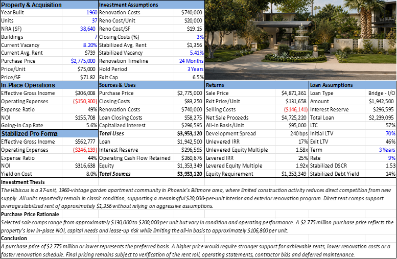
Unit Mix
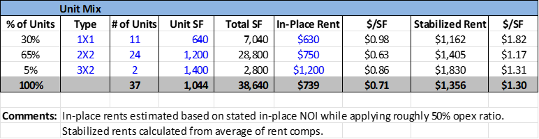
In-Place Operations
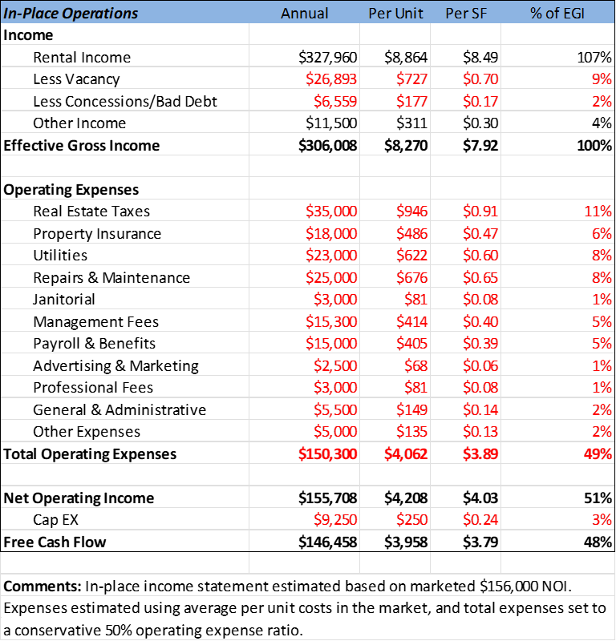
Stabilized Pro Forma
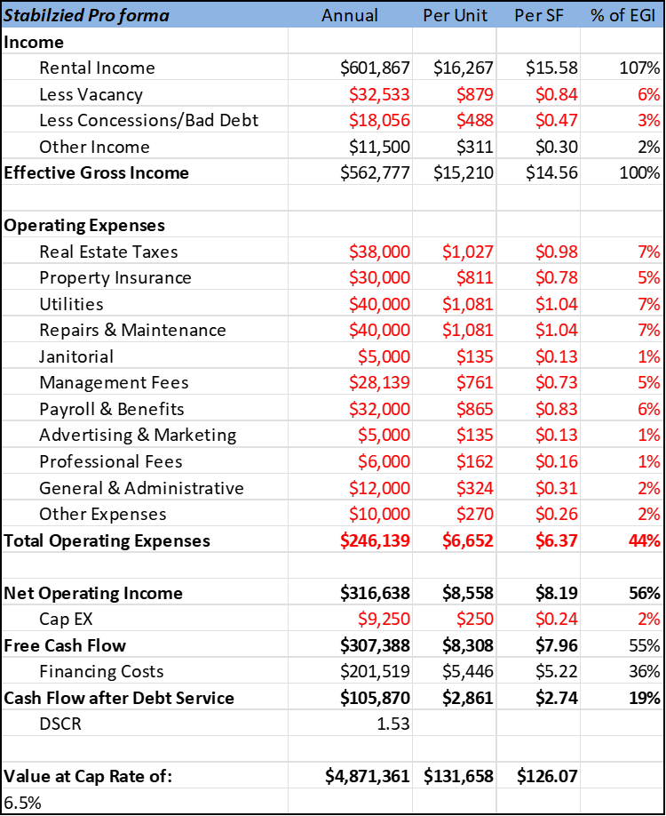
Renovation Costs
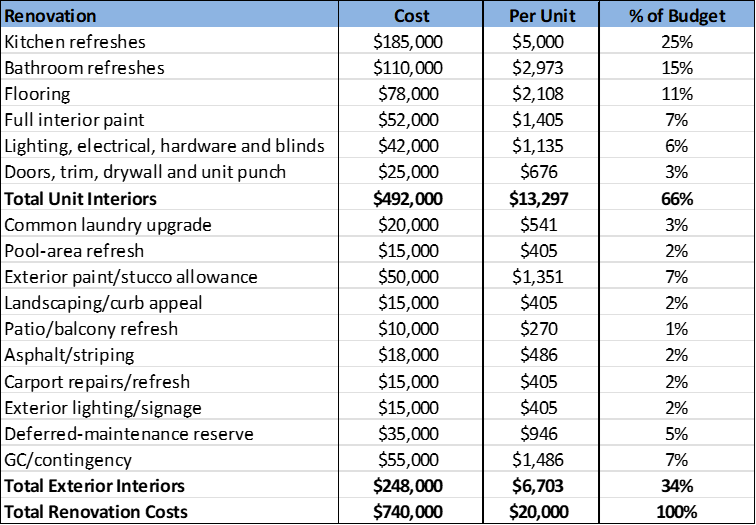
Renovation Timeline
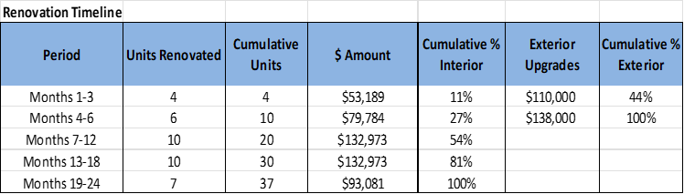
Yearly DCF
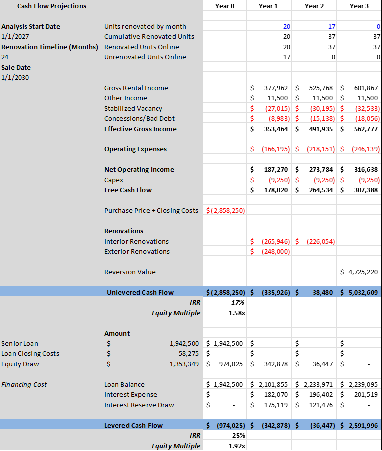
Sensitivity Analysis
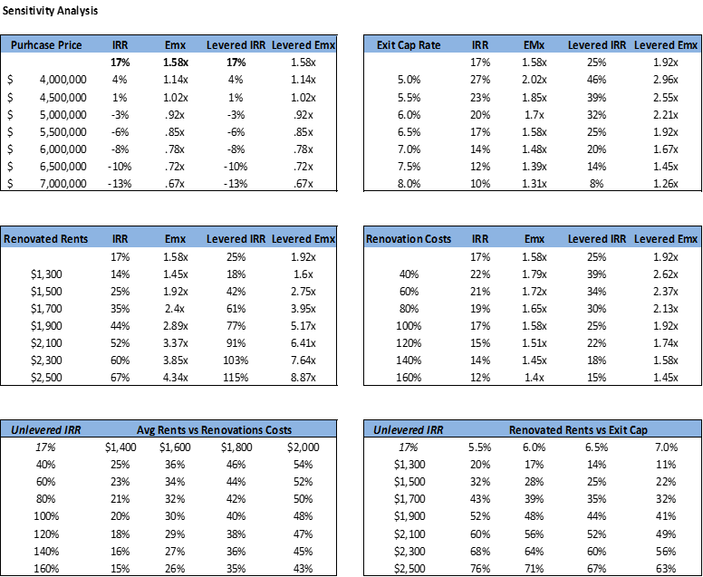
Rent Comparables
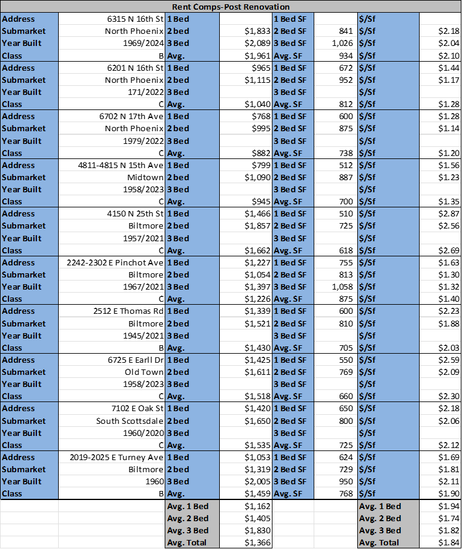
Acquisition Comparables
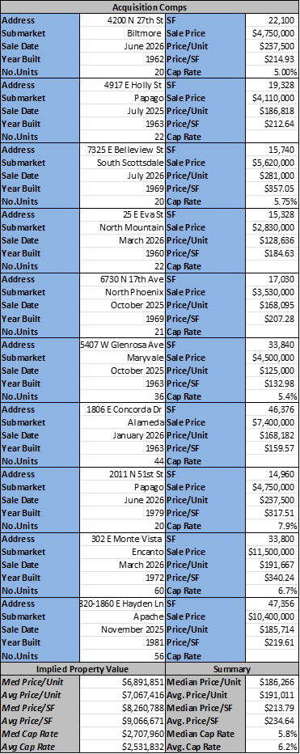
Exit Sale Comparables
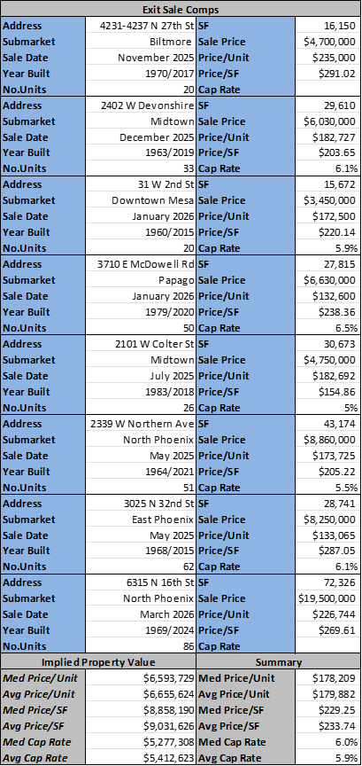
Project Files
Review the complete underwriting package or download the Excel model.